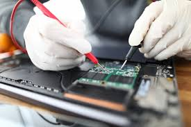

BIENVENIDOS
La finalidad del soporte técnico es ayudar a los usuarios para que puedan resolver ciertos problemas.


¿PARA QUE SIRVE
 

En los últimos años hay una tendencia a la prestación de soporte técnico remoto, donde un técnico se conecta al ordenador mediante una aplicación de conexión remota que cuenta con la capacidad de almacenar muchos trabajos de memoria.